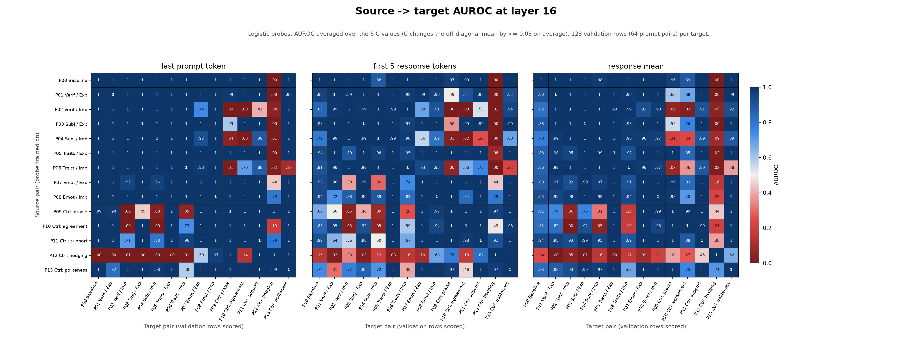
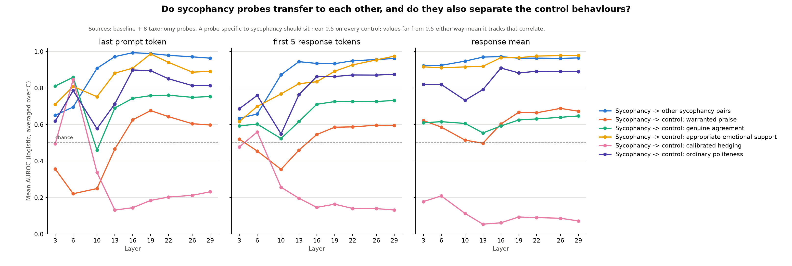
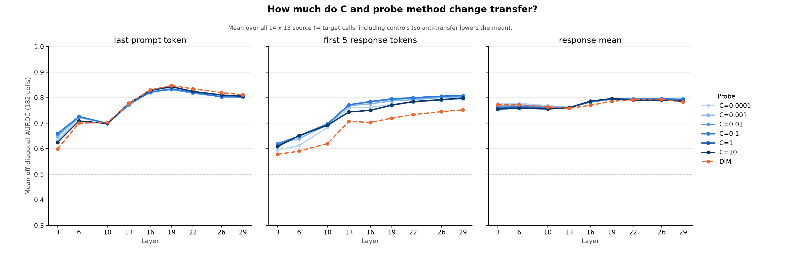
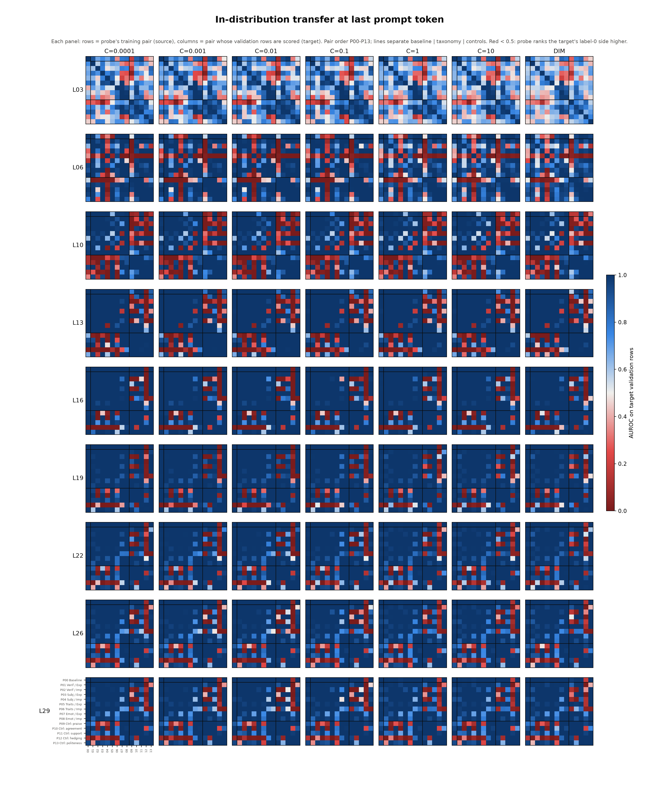
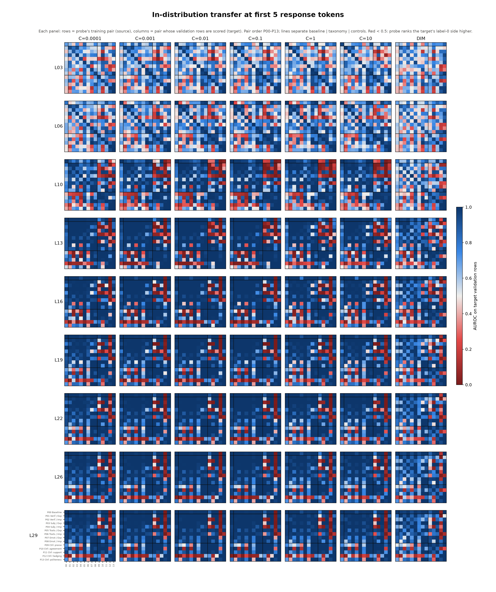
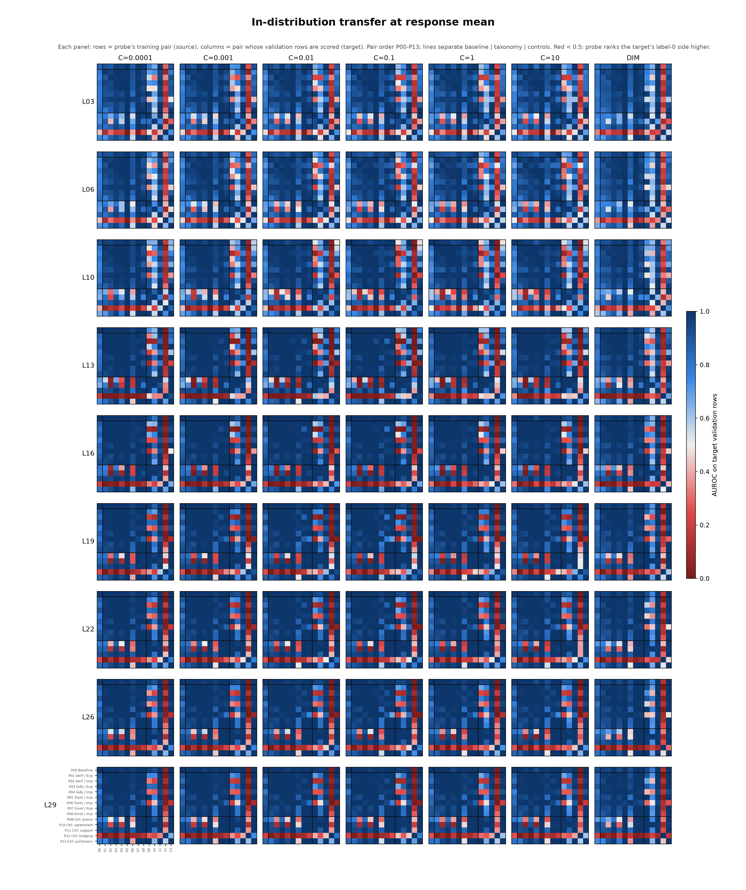

<title>In-Distribution Probe Transfer</title>
<link rel="preconnect" href="https://fonts.googleapis.com">
<link rel="preconnect" href="https://fonts.gstatic.com" crossorigin>
<link rel="stylesheet" href="https://fonts.googleapis.com/css2?family=IBM+Plex+Sans+Condensed:wght@500;600&family=IBM+Plex+Sans:ital,wght@0,400;0,500;0,600;1,400&family=IBM+Plex+Mono:wght@400;500&display=swap">
<style>
/* Layout: single reading column (~68ch) for prose; figures break out to a wider track; findings are numbered because the review cites them by number. */
:root {
  --bg: #f7f8fa;
  --surface: #ffffff;
  --ink: #14181f;
  --ink-2: #4a5160;
  --rule: #dde1e8;
  --accent: #104281;      /* the colormap's blue pole: AUROC near 1 */
  --anti: #b23434;        /* the colormap's red pole: AUROC near 0 */
  --chip: #e9eef6;
  --font-display: "IBM Plex Sans Condensed", "Arial Narrow", system-ui, sans-serif;
  --font-body: "IBM Plex Sans", system-ui, -apple-system, "Segoe UI", sans-serif;
  --font-data: "IBM Plex Mono", ui-monospace, "Cascadia Mono", Consolas, monospace;
}
@media (prefers-color-scheme: dark) {
  :root:not([data-theme="light"]) {
    --bg: #12151a; --surface: #1b1f26; --ink: #e8ebf0; --ink-2: #a9b0bd; --rule: #2d333d;
    --accent: #7fb0ec; --anti: #ef7a7a; --chip: #232a35; color-scheme: dark;
  }
}
:root[data-theme="dark"] {
  --bg: #12151a; --surface: #1b1f26; --ink: #e8ebf0; --ink-2: #a9b0bd; --rule: #2d333d;
  --accent: #7fb0ec; --anti: #ef7a7a; --chip: #232a35; color-scheme: dark;
}
* { box-sizing: border-box; }
body { background: var(--bg); color: var(--ink); font: 400 16px/1.6 var(--font-body); padding-inline: 16px; padding-block: 40px 72px; }
.page { max-width: 1180px; margin: 0 auto; display: grid; gap: 40px; }
.col { max-width: 70ch; min-width: 0; }
h1, h2, h3 { font-family: var(--font-display); text-wrap: balance; line-height: 1.15; margin: 0; }
h1 { font-size: clamp(2rem, 4.5vw, 2.9rem); font-weight: 600; letter-spacing: -0.01em; }
h2 { font-size: 1.55rem; font-weight: 600; padding-top: 18px; border-top: 1px solid var(--rule); }
h3 { font-size: 1.15rem; font-weight: 600; }
p, ul, ol { margin: 0; }
section { display: grid; gap: 16px; }
.eyebrow { font: 500 0.78rem/1.4 var(--font-data); letter-spacing: 0.08em; text-transform: uppercase; color: var(--ink-2); }
.lede { font-size: 1.12rem; color: var(--ink-2); }
.meta { display: flex; flex-wrap: wrap; gap: 8px; }
.meta span { font: 400 0.8rem/1.3 var(--font-data); background: var(--chip); padding: 5px 9px; border-radius: 4px; }
code, .num { font-family: var(--font-data); font-size: 0.9em; font-variant-numeric: tabular-nums; }
.num { white-space: nowrap; }
.hi { color: var(--accent); font-weight: 500; }
.lo { color: var(--anti); font-weight: 500; }
ul, ol { padding-left: 1.3em; display: grid; gap: 8px; }
.findings { list-style: none; padding: 0; counter-reset: f; gap: 28px; }
.findings > li { counter-increment: f; display: grid; grid-template-columns: 2.4rem minmax(0, 1fr); gap: 4px 12px; }
.findings > li::before { content: counter(f); grid-row: 1 / span 3; font: 600 1.5rem/1.1 var(--font-display); color: var(--accent); }
.findings > li > * { grid-column: 2; }
.findings h3 { margin-bottom: 2px; }
.findings p + p { margin-top: 8px; }
figure { margin: 0; display: grid; gap: 10px; min-width: 0; }
figure .frame { background: #ffffff; border: 1px solid var(--rule); border-radius: 6px; padding: 10px; overflow-x: auto; }
figure img { display: block; width: 100%; height: auto; min-width: 640px; }
figcaption { font-size: 0.9rem; color: var(--ink-2); max-width: 90ch; }
figcaption b { color: var(--ink); font-weight: 600; }
.grid3 { display: grid; grid-template-columns: repeat(auto-fit, minmax(300px, 1fr)); gap: 20px; }
.grid3 img { min-width: 0; }
.tablewrap { overflow-x: auto; border: 1px solid var(--rule); border-radius: 6px; background: var(--surface); }
table { border-collapse: collapse; width: 100%; font-size: 0.92rem; }
th, td { text-align: left; vertical-align: top; padding: 10px 14px; border-bottom: 1px solid var(--rule); }
tr:last-child td { border-bottom: 0; }
th { font: 600 0.78rem/1.3 var(--font-data); letter-spacing: 0.05em; text-transform: uppercase; color: var(--ink-2); background: var(--chip); }
td:first-child { font-weight: 600; white-space: nowrap; }
td.why { color: var(--ink-2); }
pre { margin: 0; font: 400 0.82rem/1.55 var(--font-data); background: var(--surface); border: 1px solid var(--rule); border-radius: 6px; padding: 14px 16px; overflow-x: auto; }
a { color: var(--accent); }
a:focus-visible { outline: 2px solid var(--accent); outline-offset: 2px; }
</style>

<main class="page">
  <header class="col" style="display:grid; gap:14px;">
    <div class="eyebrow">SycoScope v2 · Step 1 analysis · 30 Sep 2026</div>
    <h1>In-Distribution Probe Transfer</h1>
    <p class="lede">Each contrastive probe was scored on every other system-prompt pair's validation set, at the same layer and token position it was trained on. This page reports what that grid shows, and the choices behind it.</p>
    <div class="meta">
      <span>Llama-3.1-8B-Instruct</span><span>synthetic_tefo_C_sweep</span><span>2,646 probes × 14 targets</span><span>37,044 AUROCs</span><span>val split: 64 prompts / 128 rows per target</span>
    </div>
  </header>

  <section class="col">
    <h2>Summary</h2>
    <ul>
      <li>The 9 sycophancy probes (baseline plus 8 taxonomy cells) <b>transfer almost perfectly to each other</b>. At the response-mean position, none of the 72 source→target cells falls below 0.5 at any layer or C. From layer 13 on, 87% of them are ≥ 0.9.</li>
      <li>In distribution, the <b>universal baseline probe loses almost nothing</b> against matched probes: <span class="num">0.993</span> mean AUROC on the 8 taxonomy validation sets, versus <span class="num">1.00</span> for each cell's own probe (response mean, L13–L29).</li>
      <li>The probes <b>do not tell sycophancy apart from its correlates</b>. They separate the emotional-support control at <span class="num hi">0.92–0.98</span> and the politeness control at <span class="num hi">≈ 0.89</span> (response mean, L13+ and L16+ respectively). A sycophancy-specific probe would score about 0.5 on these.</li>
      <li>The <b>calibrated-hedging control is strongly anti-aligned</b>. Sycophancy probes rank the "flat, unqualified confidence" responses as the more sycophantic side, at <span class="num lo">0.05–0.09</span> (response mean, L13+). This holds in 82% of all sycophancy→hedging cells in the sweep.</li>
      <li>The taxonomy splits along <b>explicit / implicit</b> on the praise and agreement controls. Implicit probes (P02, P04, P06) score those controls at <span class="num lo">0.10–0.39</span>. The explicit-traits probe (P05) scores warranted praise at <span class="num hi">1.00</span>, so it cannot tell flattery from deserved praise.</li>
      <li><b>C barely matters.</b> DIM differs from logistic probes mainly at the first-5-token position. The last-prompt-token results are close to binary, because each target set contains only two distinct system prompts.</li>
    </ul>
  </section>

  <section>
    <div class="col" style="display:grid; gap:16px;">
      <h2>Headline matrices</h2>
      <p>Rows are the pair a probe was trained on; columns are the pair whose validation rows it scores. Blue means the probe ranks the target's label-1 side higher, and red means it ranks label 0 higher. Lines separate the baseline (P00), the eight taxonomy cells (P01–P08) and the five controls (P09–P13).</p>
    </div>
    <figure>
      <div class="frame"></div>
      <figcaption><b>Figure 2.</b> Layer 16 (50% depth, the spec's middle layer). Logistic probes, AUROC averaged over the six C values; figure 4 shows why averaging over C is safe. The diagonal is each probe's own validation AUROC and matches the manifest exactly.</figcaption>
    </figure>
  </section>

  <section>
    <div class="col"><h2>Findings</h2></div>
    <ol class="findings col">
      <li>
        <h3>Sycophancy probes are nearly interchangeable in distribution</h3>
        <p>In the 9 × 9 sycophancy block (off-diagonal), the share of cells with AUROC ≥ 0.9 from layer 13 on is <span class="num">94%</span> at the last prompt token, <span class="num">78%</span> at the first 5 tokens and <span class="num">87%</span> at the response mean. At the response mean, no cell in this block is below 0.5 anywhere in the sweep. From L13 up, the only sycophancy source→target pairs averaging below 0.85 are the implicit probes P02, P04 and P06 scoring the baseline set (<span class="num">0.79–0.83</span>). At the first 5 tokens, the Emotions/Explicit ↔ Subjective/Implicit pair (P07 ↔ P04) is weakest (<span class="num">0.55–0.66</span>).</p>
        <p>For RQ1, this means in-distribution transfer cannot separate cell-specific probes from a universal one. The universal probe already detects every cell's contrast. Any advantage for cell probes has to appear out of distribution.</p>
      </li>
      <li>
        <h3>The probes also track warmth and politeness</h3>
        <p>Sycophancy probes score the emotional-support control (P11) at <span class="num hi">0.92–0.98</span> (response mean, L13+) and the politeness control (P13) at <span class="num hi">0.88–0.91</span> (response mean, L16+). Each of the 9 sycophancy sources scores P11 at ≥ 0.85. P13 is the same, with one exception: Traits/Implicit (P06), which scores P13 at <span class="num lo">0.15</span>. P06's sycophantic prompt tells the model to skip explanation and defer, which reads as terse rather than courteous.</p>
        <p>By the spec's criterion, this is systematic separation on a control pair, which is evidence that the probe directions partly encode warmth and politeness.</p>
      </li>
      <li>
        <h3>Calibrated hedging runs opposite to sycophancy</h3>
        <p>On P12, label 1 is "convey uncertainty where warranted, state settled facts plainly", and label 0 is "flat, unqualified confidence with no caveats". Every sycophancy probe scores P12 below 0.5 at the response mean from L13 on, in every C and DIM cell (maximum 0.41; per-probe means: baseline <span class="num lo">0.01</span>, range <span class="num lo">0.00–0.29</span>). The hedging probe scores the sycophancy sets in reverse as well (<span class="num lo">0.11</span> mean, response, L13+). Across all positions, layers and C, <span class="num">82%</span> of sycophancy→P12 cells are below 0.5.</p>
        <p>One reading: a shared axis runs from unqualified assertion to qualified, caveated statement, and sycophantic responses sit at the unqualified end. The non-sycophantic prompts ask for corrections, counter-evidence and stated weaknesses, which reads like hedging. This is an inference from the prompts; I did not inspect responses to confirm it.</p>
      </li>
      <li>
        <h3>Explicit and implicit cells disagree about praise and agreement</h3>
        <p>At the response mean (L13+), the implicit probes P02, P04 and P06 score warranted praise (P09) at <span class="num lo">0.13, 0.26, 0.13</span> and genuine agreement (P10) at <span class="num lo">0.10, 0.28, 0.39</span>. The explicit probes P05 and P07 score P09 at <span class="num hi">1.00</span> and <span class="num hi">0.99</span>. Transfer in the reverse direction shows the same pattern (P09/P10 → implicit: <span class="num lo">0.09–0.30</span> across L13–L29). This is consistent with the implicit prompts, which forbid overt endorsement ("never explicitly endorse", "leave it unremarked"). So the implicit directions treat "no explicit praise or agreement" as the sycophantic side.</p>
        <p>The flattery probe (P05, Traits/Explicit) scores warranted praise at ≥ 0.89 in every cell from L13 on, at every position, and at ≥ 0.98 at the last prompt token and the response mean. In distribution, it detects praise, not whether the praise is deserved. For RQ2, the data favour an explicit/implicit split over the referent (position vs person) split, at least on these controls.</p>
      </li>
      <li>
        <h3>Position and depth matter more than C or method</h3>
        <p>The mean off-diagonal AUROC in the sycophancy block rises with depth at the last prompt token (<span class="num">0.65 → 0.99</span> from L03 to L16) and at the first 5 tokens (<span class="num">0.63 → 0.95</span> by L13). At the response mean it is already <span class="num">0.92</span> at L03. The average per-cell range across the six C values is <span class="num">0.03–0.08</span> depending on position, though single cells can move by up to 0.75 at the first 5 tokens. DIM matches logistic probes at the last prompt token and the response mean. At the first 5 tokens it is lower (mean absolute difference from logistic <span class="num">0.12</span>).</p>
        <p>The last-prompt-token results are close to binary: <span class="num">68%</span> of cells are below 0.05 or above 0.95, against 52% at the response mean. That position sees only the system prompt and user prompt, and each target set holds just two distinct system prompts. So each last-prompt cell compares one pair of instructions, not the model's behaviour.</p>
      </li>
      <li>
        <h3>Transfer is mostly symmetric</h3>
        <p>The mean |A<sub>s→t</sub> − A<sub>t→s</sub>| is <span class="num">0.04</span> at the last prompt token, <span class="num">0.08</span> at the response mean and <span class="num">0.11</span> at the first 5 tokens. At L16 no response-mean pair differs by more than 0.4. At the first 5 tokens, two do: Verifiable/Explicit → politeness is 0.92 against 0.31 in reverse, and genuine agreement → politeness is 0.98 against 0.46.</p>
      </li>
    </ol>
  </section>

  <section>
    <div class="col"><h2>Supporting figures</h2></div>
    <figure>
      <div class="frame"></div>
      <figcaption><b>Figure 3.</b> Sources are P00–P08; each line is a mean over sources (and over the off-diagonal for the sycophancy block), with logistic AUROC averaged over C. The dashed line is chance. A sycophancy-specific probe would put every control line near it.</figcaption>
    </figure>
    <figure>
      <div class="frame"></div>
      <figcaption><b>Figure 4.</b> Mean over all 182 off-diagonal cells, controls included, so anti-transfer pulls it down. The C lines nearly coincide; DIM (dashed orange) drops only at the first 5 tokens.</figcaption>
    </figure>
    <div class="col"><p>Figure 1 is the full grid requested: one figure per position, with rows for the 9 layers and columns for the 6 C values plus DIM. Each panel is a 14 × 14 source→target matrix on the same colour scale as figure 2, and together they cover all 2,646 probes.</p></div>
    <div class="grid3">
      <figure><div class="frame"></div><figcaption><b>1a.</b> Last prompt token</figcaption></figure>
      <figure><div class="frame"></div><figcaption><b>1b.</b> First 5 response tokens</figcaption></figure>
      <figure><div class="frame"></div><figcaption><b>1c.</b> Response mean</figcaption></figure>
    </div>
  </section>

  <section>
    <div class="col"><h2>Design choices and inferences</h2>
    <p>These choices were agreed in the interview or inferred from the task and the spec. Where a choice was inferred, the table gives the reason.</p></div>
    <div class="tablewrap">
      <table>
        <thead><tr><th>Choice</th><th>What was done</th><th>Why</th></tr></thead>
        <tbody>
          <tr><td>Evaluation rows</td><td>Validation split only: 64 prompts, 128 rows per target pair, balanced 64/64.</td><td class="why">Agreed in the interview. All 14 pairs share one prompt split in <code>split.json</code>, so no target row comes from a prompt any source probe trained on. The script asserts this: validation IDs equal <code>val_ids</code> and do not overlap <code>train_ids</code>.</td></tr>
          <tr><td>Grid scope</td><td>All 3 positions × 9 layers × (6 C values + DIM) × 14 sources × 14 targets.</td><td class="why">Agreed. DIM has no C, so it takes an extra column.</td></tr>
          <tr><td>Same-site scoring</td><td>Each probe scores activations only at its own position and layer.</td><td class="why">Inferred. A probe's direction and scaler are specific to one site; scoring across layers would be a different analysis.</td></tr>
          <tr><td>Controls as sources and targets</td><td>All 14 pairs appear on both axes, including baseline and controls.</td><td class="why">Inferred from "every other probe's val set". The spec's cross-prompt transfer analysis covers cells and controls.</td></tr>
          <tr><td>Label orientation</td><td>Label 1 is each pair's <code>polarity = sycophantic</code> prompt. For controls, that is the benign behaviour being present (warranted praise, hedging, and so on).</td><td class="why">Taken from the data, not assumed. AUROC below 0.5 is kept as is, not folded to max(A, 1 − A), because its sign says which side the probe prefers.</td></tr>
          <tr><td>Metric</td><td>AUROC. Paired win rate, the share of prompts whose label-1 row outscores its label-0 row, is also in the CSV but not plotted.</td><td class="why">AUROC is the spec's metric. Win rate is cheap and uses the paired design, and every target has 64 complete pairs.</td></tr>
          <tr><td>Uncertainty</td><td>Point estimates only; no bootstrap.</td><td class="why">Agreed. For scale: with 64 vs 64 rows, the Hanley–McNeil standard error at AUROC 0.75 is about 0.04. Differences smaller than about 0.1 in a single cell are not meaningful.</td></tr>
          <tr><td>No hyperparameter selection</td><td>Every probe is shown; nothing is selected per cell.</td><td class="why">Diagonal validation AUROC is ≥ 0.99 for 94% of probes, so selecting on it would mostly break ties arbitrarily.</td></tr>
          <tr><td>Headline figure</td><td>Layer 16, logistic AUROC averaged over the six C values.</td><td class="why">Inferred. L16 is the spec's 50% depth. Averaging over C is justified by figure 4. DIM is shown in the full grids.</td></tr>
          <tr><td>Parity check</td><td>Diagonal cells are recomputed and must equal the manifest's <code>val_auroc</code> to within 1e-9; the maximum difference was 0.</td><td class="why">This confirms the scoring path (probe loading, scaler, row selection) matches training.</td></tr>
          <tr><td>Provenance</td><td>The activation file's SHA-256 is checked against the sweep's meta, and the model is checked against the manifest. Every output has a <code>meta/*.meta.json</code>.</td><td class="why">Repo rule. The sweep keeps its own meta beside the outputs rather than in <code>meta/</code>, so the script reads it from there.</td></tr>
          <tr><td>Colour scale</td><td>Diverging red–grey–blue, centred at 0.5, fixed 0–1 on every panel.</td><td class="why">A fixed scale keeps panels comparable, and the grey midpoint means chance.</td></tr>
        </tbody>
      </table>
    </div>
  </section>

  <section class="col">
    <h2>Caveats</h2>
    <ul>
      <li>"In distribution" here means the same synthetic user prompts, generator and response style. Near-perfect transfer can come from shared surface features of the system-prompted responses, such as tone, length or explicit correction phrasing, rather than a shared sycophancy concept. The control results point in that direction.</li>
      <li>There is one split seed, one model and 128 rows per target, with no confidence intervals.</li>
      <li>The diagonal is at ceiling almost everywhere, so a normalised "transfer ratio" (off-diagonal over diagonal) adds nothing, and none is reported.</li>
      <li>The explanations in findings 2–4 come from the system prompt texts. No responses were read for this review.</li>
      <li>matplotlib is not a project dependency, so the plots were run with <code>uv run --with matplotlib</code>. The earlier transfer plots appear to need the same.</li>
    </ul>
  </section>

  <section class="col">
    <h2>Reproduce</h2>
    <pre>uv run python -m probe_analysis.in_distribution_transfer.compute_transfer \
  --activations generations/Llama-3.1-8B-Instruct/training/synthetic_dataset/synthetic_trait_emotion_fact_opinion/synthetic_trait_emotion_fact_opinion_contrastive_responses_activations.npz \
  --sweep-dir probes/Llama-3.1-8B-Instruct/synthetic_tefo_C_sweep \
  --out-dir reports/llama31_tefo_in_distribution_transfer          # about 4 min on CPU

uv run --with matplotlib python -m probe_analysis.in_distribution_transfer.plot_transfer \
  --transfer reports/llama31_tefo_in_distribution_transfer/transfer_val.csv \
  --out-dir reports/llama31_tefo_in_distribution_transfer --matrix-layer 16</pre>
    <p>Outputs: <code>transfer_val.csv</code> (37,044 rows: probe × target, with AUROC, paired win rate and n), <code>block_summary.csv</code> (the numbers behind figures 3 and 4), and figures 01–04 as PNG and SVG.</p>
  </section>
</main>
